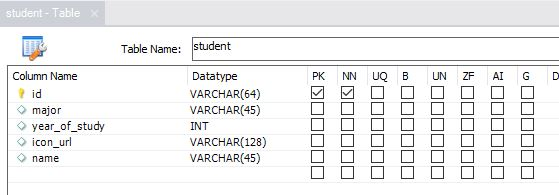
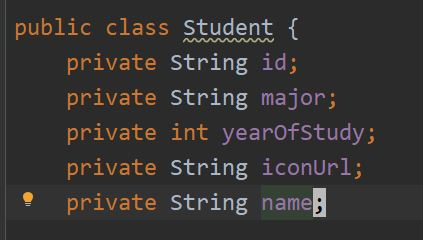
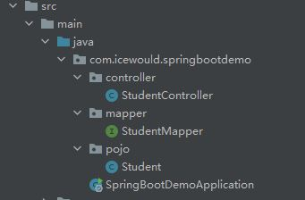

SpringBoot 和数据库
引入
我们已经尝试过使用 SpringBoot 搭建服务，根据用户的请求返回对应消息了。比如，你在 /product 路径下做了一个接口，每当用户以 GET 形式调用，可以返回一些产品信息给用户。但是，我们现在有这样的要求：我们要让用户自己上架、查看、删除商品。这该怎么做呢？
我们首先要做一个新的接口，就放在 /product/add 下吧。这个借口接收一个 产品的信息作为参数（要接收 request body的话，需要用 POST 形式的请求） 。每当用户传过来一个商品信息，我们可以运用 Java 本身的能力，创建一个 ArrayList 或者 HashMap对象，把它保存进去。用户查询的时候，我们再把对应的东西拿出来。大概的逻辑如下：
# 以下是半 Python 半 Java 的伪代码
class ProductController:
products = new HashMap()
@PostMapping(“/product/add”)
public void addProduct(requestBody):
# 获取商品 id
productId = requestBody.id
# 下面是 Python 的写法
this.products[productId] = requestBody
# 如果是 Java 的写法，应该是：
# this.products.put(productId, requestBody)
@GetMapping(“/product/get”)
public Product getProduct(requestParam):
return this.products.get(requestParam)
但是，这有个问题：这些数据都是保存在内存里的。一旦你让程序停止运行（比如关机了之类的），那么这些数据就会统统丢失掉。
所以，我们需要一个数据库去持久化地保存这些信息。
使用数据库保存数据的逻辑是这样（这里以 SQL 为例，不过所有的数据库逻辑都差不多）：
# 配置数据库连接的属性
configs = ...
# 与数据库建立连接
sqlConnection = new SQLConnection(“sqlUrl”, configs)
# 写一个 SQL 语句，并运行
query = “SELECT ... FROM ... WHERE ...”
# result 并不直接是数据，应该是包装好的一个东西，就跟 http 请求的回复一样
result = sqlConnection.runQuery(query)
# 查询结果是一个 Product 对象，需要把它从 result 中提取出来
product = getProduct(result)
这样其实非常不好。至少有以下几个原因：
- 我们要把
SQL代码和Java代码混在一起写。 - 对于
Product这个类，我们要写一个getProduct来从result里提取对应的信息。假如我们的项目有三十个类，那么这样的信息提取函数就有三十个，非常麻烦。 - 每当从数据库读取消息，我们都需要用到
sqlConnection这个变量。我们可能要在程序开始前初始化sqlConnection，然后保存一份它的全局变量。
所以，我们引入 Mybatis，并且使用 SpringBoot 默认的 Hikari 管理与数据库的连接。
配置
网上的教程有点魔幻，所以直接在这写一份供大家参考。
首先，需要在 pom.xml 引入第三方库。
<dependency>
<groupId>org.mybatis.spring.boot</groupId>
<artifactId>mybatis-spring-boot-starter</artifactId>
</dependency>
<dependency>
<groupId>mysql</groupId>
<artifactId>mysql-connector-java</artifactId>
</dependency>
然后在 src/main/resources/application.properties 加入
spring.datasource.url=jdbc:mysql://<ip_address>:<port>/<schema_name>?serverTimezone=UTC&useUnicode=true&characterEncoding=utf-8&useSSL=true
spring.datasource.username=<username>
spring.datasource.password=<password>
spring.datasource.driver-class-name=com.mysql.cj.jdbc.Driver
这里是在配置数据库的连接。连接数据库，和一个登录的请求是一样的，需要知道服务器的地址 (<ip_address>)，端口 (<port>)，然后提供账号 (<username>) 和密码 (<password>) 。除此之外，我们还要明确，我们使用的是哪个 database （<schema_name>) ，因为一个主机上可能存在好多个 database（在 MySQL 中，database 也叫做 schema) 。
最后一行，我们指定了数据库的驱动。我们可以看到 jdbc，这是一套为 Java 设计的数据库的接口，有兴趣的话可以去了解一下。
配置完之后，SpringBoot 就会自己去管理所有的数据库连接了，不需要我们自己在 Java 代码里面新建。
使用
创建类（Pojo)
首先，我们要在创建一个类，对应数据库里的数据。
例如，在数据库里，我们定义了这样一张 student 表，有以下内容：

相对应地，我们要创建一个 Java class，像这样：

注意：请为全部五个字段加入 getter 和 setter，否则会造成无法正常读取或者写入信息。用 IntelliJ 的话，可以在 .java 文件里按下 Alt + Insert，选择 Getter and setter，按住 Shift 选中所有的类，自动添加。
创建 Mapper
Mapper 是用来管理与数据库的交互的。它可以将一个数据库的操作，对应到一个 Java 的函数调用。
首先，请先创建一个 StudentMapper 的 interface 文件。然后加入以下内容
@Mapper // 这一句告诉 SpringBoot，这是一个 Mapper，这样你才能在其它地方使用它
public interface StudentMapper {
@Select("SELECT * from student WHERE id = #{studentId}") // 在这里写 SQL 语句。注意其中的变量的写法
Student findById(@Param("studentId") String studentId); // 这里写的是 Java 的函数名以及参数。注意 @Param 里面定义的就是 SQL 语句里 #{} 里面的变量
// 可以写很多个语句，每个对应一个函数
@Select("SELECT * from student WHERE major = #{major}")
List<Student> findByMajor(@Param("major") String major);
}
我们先只添加这两个函数。这样，你就可以在另一个 class 里这样使用：
public class StudentController {
@Resource // 这个标签让你无需在 constructor 里面初始化这个 studentMapper
private StudentMapper studentMapper;
@GetMapping("/student-major")
public List<Student> getStudentByMajor(@RequestParam("major") String major) {
return studentMapper.findByMajor(major); // 这里直接用就行
}
}
代码结构
我们要把所有的 Controller，class (pojo) 和 mapper 分好类，放在独立的 package 里面。上面的例子的代码结构应该是这样：

当然，我们还需要一个叫 service 的包，专门存放 Service 类，并且把 Controller 的权力转交给 Service 类。具体怎么做，我们会在之后的后端代码规范里细说。